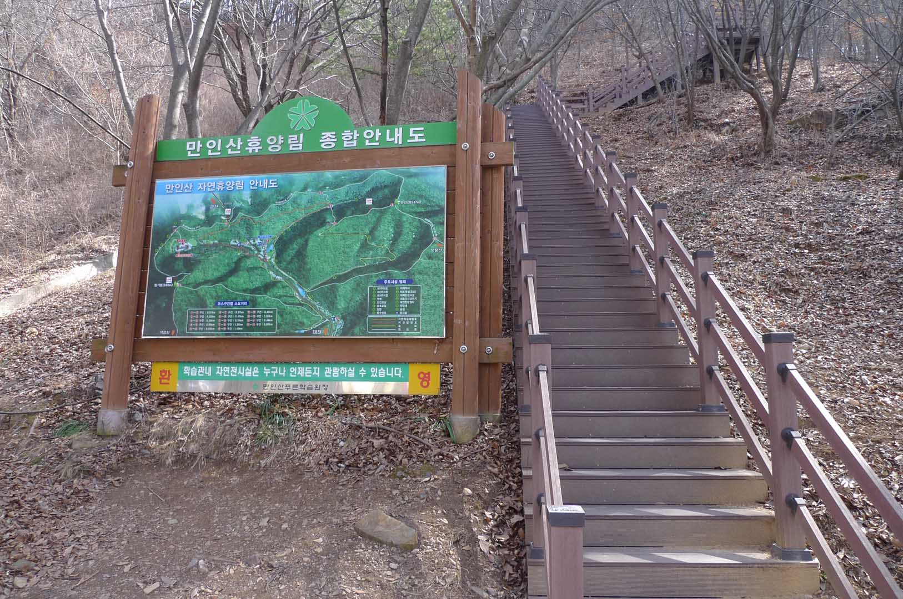
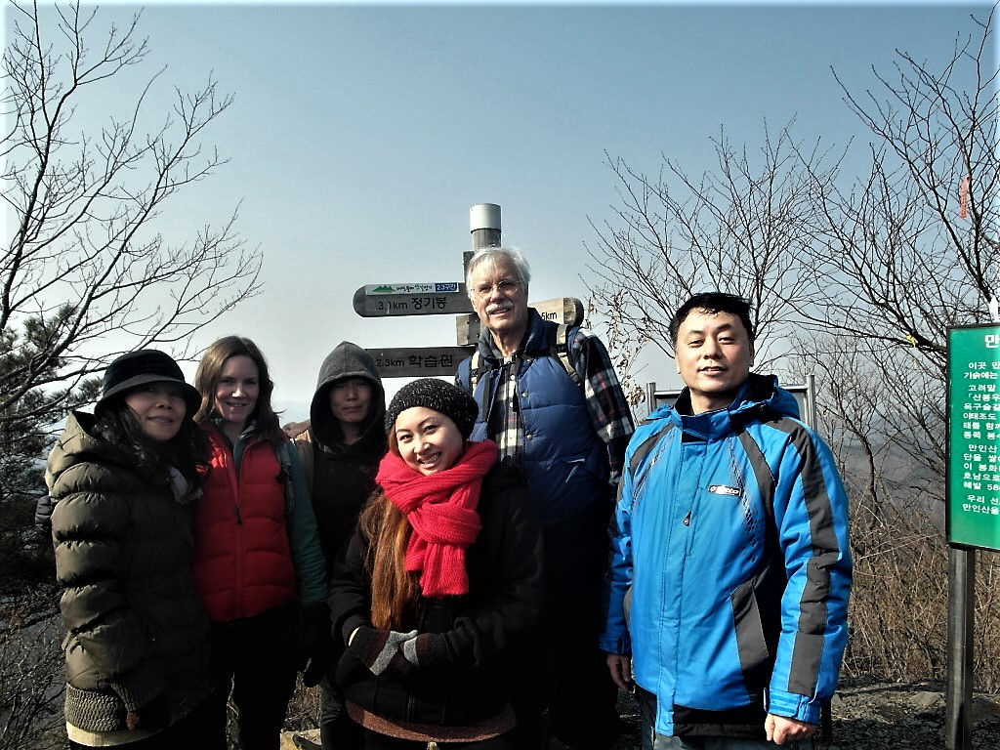
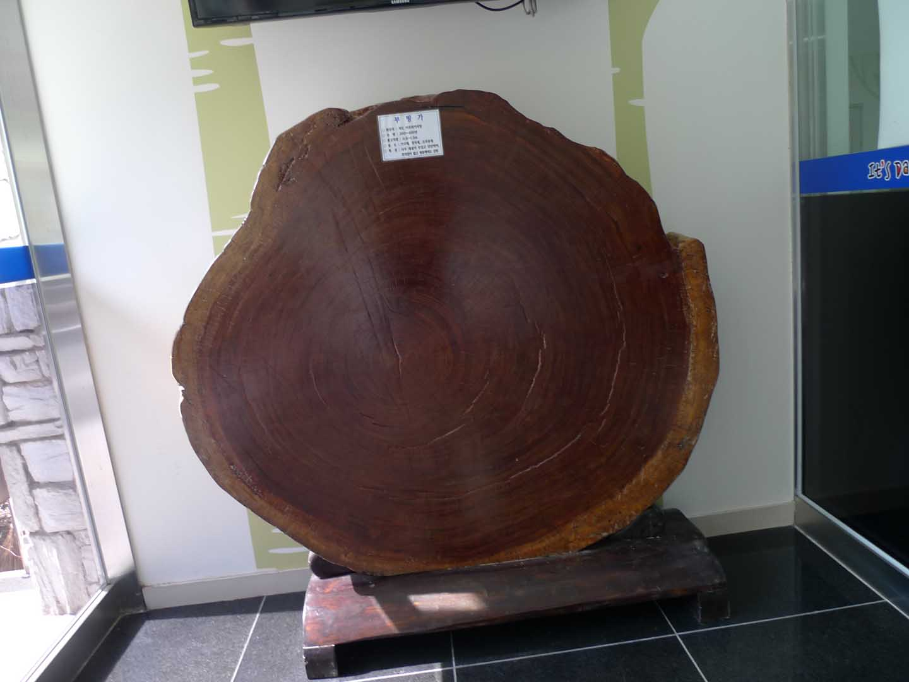
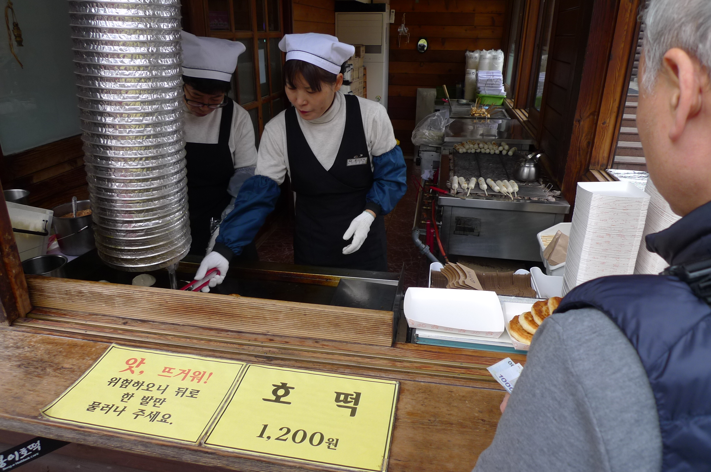

Maninsan – 만인산 (Hike of January 29, 2012)

This mountain is about a 40 minute drive from KAIST to the south east of Daejeon (대전). The mountain has
a large parking lot at the base as it is difficult to get here without a car. There is also a fitness
training school nearby with rope bridges and exercise machines. Starting from the parking lot the trail
has a moderate grade up a paved road that turns left into a steep path in a gully with many stairs and
no rest areas up to the ridge where there is a gazebo at ManInRu (만인루). It is amazing to think that
someone had to build all those stairs going up the mountain.
Group photo

We then turned around and went down a long ridge summit about 30 minutes (400 meters) away from the
gazebo and followed a moderate grade to the peak. On this hike we ate on the summit (540 meters)
enjoying the view and sunny weather. We then continued over the peak down along the ridge and finally
turning down to the first Joseon (조선) king’s placenta burial site. Here is our group photo of the day.
As you can see by our clothing it is a cold day but as long as you are moving you are warm. Stopping to
eat lunch too long reminds you of how cold the temperatures are so you need to speed up and keep moving.
Geological Museum

Near this location is a rope bridge and it is a short hike to the training school with solar panels
where we started. If you have time it is well worth a visit to the school’s wonderful botanical and
geological museum. Of particular note is the cross section of a 600 year old tree. If you have time one
can count the tree rings. There is a collection of butterflies, fossils, bugs that children will enjoy
looking at with some touching allowed. Like many museums in Korea there is no admission as learning
about Korea’s nature and history should be open to everyone it is felt. Koreans take pride in their
culture and history and enjoying sharing it with others. Do keep in mind if you would like to visit this
museum that in Korea most museums are closed on Mondays. This allows people to visit on weekends when
most people have time.
Korean Food

The nearby restaurant had a long line waiting for the famous and delicious but sweet hotteok (호덕) that
is sold here. Not for those on a diet but after a good hike you’ve earned a treat! There were also many
people warming up around fire pits filled with burning logs. We drove a short distance down the road
then turned left up a steep road to the restaurant, heated with wood, containing a Hanok (한옥) style
Korean folk museum and many mud walled buildings. From here the drive to KAIST was about one and a half
hours drive back home.